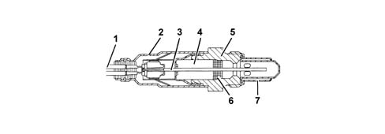
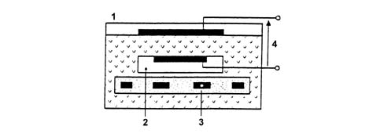
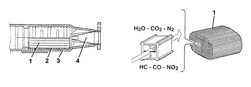
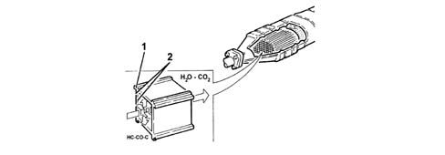

1080B exhaust emission control system
- Path
- Descriptions > 10 ENGINE > 1080 EXHAUST EMISSION CONTROL SYSTEM > 1080B exhaust emission control system
- Kind
- system description
- Applies to
- engines: 1.6 TS, 2.0 TS, 1.9 JTD 8V, 1.9 JTD 16V; all production periods
- Interactive page
- https://sloeber94.github.io/elrnDB-a147/en/#/3022422
Applies to: engines: 1.6 TS; all production periods
OPERATION
Lambda sensors
They are the 'planar' type and are fitted upstream and downstream of the catalyzer.
The upstream sensor carries out the check on the mixture strength known as the first loop.
The control unit controls and manages the injection so that the air/fuel ratio is always sufficiently close to the stoichiometric value to maximize the conversion efficiency of the catalyzer; in full power and high usage conditions, the mixture is enriched to guarantee maximum performance.
The downstream sensor is designed to diagnose the conversion efficiency of the catalyzer(s).
Thus:
- Lambda = 1 ideal mixture
- Lambda > 1 lean mixture
- Lambda < 1 rich mixture

a - Rich mixture (lack of air) b - Weak mixture (too much air)
The Lambda sensor, placed in contact with the exhaust gases, generates an electrical signal whose voltage depends on the concentration of oxygen present in the gases. This voltage is characterized by a sudden change when the composition of the mixture moves away from Lambda = 1.
The heating of the Lambda sensor is managed by the fuel injection control unit in relation to the exhaust gas temperature.
This avoids thermal shocks on the ceramic casing due to the contact with condensed water, present in the exhaust gases when the engine is cold.
The measuring cell and heater are built into the 'planar' (stratified) ceramic element, with the advantage of obtaining quick heating of the cell, thus permitting a closed loop' check (Lambda = 1) within 10 seconds of engine start-up.

1 - Connecting cable 2 - Protective sleeve 3 - Planar sensor element 4 - Ceramic tube casing 5 - Sensor housing 6 - Ceramic seal 7 - Protective tube
The operation of the Lambda sensor is based on the principle of an oxygen concentration cell with solid electrolyte.
The surfaces of the measuring cell are coated with microporous layers of noble material.

1 - Exhaust gas 2 - Passage of reference air 3 - Heater 4 - Lambda sensor voltage
SPECIFICATIONS
- Supply: 12V
- Internal resistance: 0.5 - 1 kOhm
Catalytic converter
The three-way catalytic converter simultaneously reduces the three polluting gases present in the exhaust gases:
- unburnt hydrocarbons (HC);
- carbon monoxide (CO);
- nitrogen oxides (NOx).
Two types of chemical reactions take place in the converter:
- oxidation of the CO and HC, converted into carbon dioxide (CO2) and water (H2O)
- reduction of the NOx converted into nitrogen (N2).
The converter consists of a monolith, a metal mesh support for damping impacts and vibrations and an outer stainless steel housing resistent to high temperatures and atmospheric agents. The monolith consists of a honeycomb structure comprising a ceramic material coated with a very thin layer of catalytically active substances, platinum or rodium. These accelerate the chemical decomposition of the harmful substances contained in the exhaust gases which, passing through the core cells at temperatures of over 300-350 degrees C, activate the catalyzers, thus starting the oxidoreduction reactions.

1 - Ceramic monolith 2 - Metal support 3 - Outer casing 4 - Perforated plate metal cone
Applies to: engines: 2.0 TS; all production periods
OPERATION
Lambda sensors
They are the 'planar' type and are fitted upstream and downstream of the catalyzer.
The upstream sensor carries out the check on the mixture strength known as the first loop.
The control unit controls and manages the injection so that the air/fuel ratio is always sufficiently close to the stoichiometric value to maximize the conversion efficiency of the catalyzer; in full power and high usage conditions, the mixture is enriched to guarantee maximum performance.
The downstream sensor is designed to diagnose the conversion efficiency of the catalyzer(s).
Thus:
- Lambda = 1 ideal mixture
- Lambda > 1 lean mixture
- Lambda < 1 rich mixture
a - Rich mixture (lack of air) b - Weak mixture (too much air)
The Lambda sensor, placed in contact with the exhaust gases, generates an electrical signal whose voltage depends on the concentration of oxygen present in the gases. This voltage is characterized by a sudden change when the composition of the mixture moves away from Lambda = 1.
The heating of the Lambda sensor is managed by the fuel injection control unit in relation to the exhaust gas temperature.
This avoids thermal shocks on the ceramic casing due to the contact with condensed water, present in the exhaust gases when the engine is cold.
The measuring cell and heater are built into the 'planar' (stratified) ceramic element, with the advantage of obtaining quick heating of the cell, thus permitting a closed loop' check (Lambda = 1) within 10 seconds of engine start-up.
1 - Connecting cable 2 - Protective sleeve 3 - Planar sensor element 4 - Ceramic tube casing 5 - Sensor housing 6 - Ceramic seal 7 - Protective tube
The operation of the Lambda sensor is based on the principle of an oxygen concentration cell with solid electrolyte.
The surfaces of the measuring cell are coated with microporous layers of noble material.
1 - Exhaust gas 2 - Passage of reference air 3 - Heater 4 - Lambda sensor voltage
SPECIFICATIONS
- Supply: 12V
- Internal resistance: 0.5 - 1 kOhm
Catalytic converter
The three-way catalytic converter simultaneously reduces the three polluting gases present in the exhaust gases:
- unburnt hydrocarbons (HC);
- carbon monoxide (CO);
- nitrogen oxides (NOx).
Two types of chemical reactions take place in the converter:
- oxidation of the CO and HC, converted into carbon dioxide (CO2) and water (H2O)
- reduction of the NOx converted into nitrogen (N2).
The converter consists of a monolith, a metal mesh support for damping impacts and vibrations and an outer stainless steel housing resistent to high temperatures and atmospheric agents. The monolith consists of a honeycomb structure comprising a ceramic material coated with a very thin layer of catalytically active substances, platinum or rodium. These accelerate the chemical decomposition of the harmful substances contained in the exhaust gases which, passing through the core cells at temperatures of over 300-350 degrees C, activate the catalyzers, thus starting the oxidoreduction reactions.
1 - Ceramic monolith 2 - Metal support 3 - Outer casing 4 - Perforated plate metal cone
Applies to: engines: 1.9 JTD 8V; all production periods
COMPONENT DESCRIPTIONS
CATAYTLIC CONVERTER
Specifications:
The oxidizing catalytic converter is a post-treatment device for oxidizing the CO, HC and particle matter, transforming them into carbon dioxide (CO2) and water vapour (H2O).
The catalytic converter consists of a ceramic, honeycomb structure monolith (1) with cells impregnated with platinum (2), which acts as a catalyst for the oxidation process.

Operation
The exhaust gases which pass through the cells heat the catalyzer, triggering the conversion of the pollutants into inert compounds.
The chemical reaction which causes the oxidation of the CO, HC, and particle matter takes place at temperatures of between 200 and 350° C.
In effect, at temperatures above 350° C the sulphur, contained in the diesel fuel, starts to oxidize, producing sulphur dioxide and sulphur trioxide.
Applies to: engines: 1.9 JTD 16V; all production periods
COMPONENT DESCRIPTION
CATALYTIC CONVERTOR
Specifcations
The oxidizing catalyzer is a post-treatment device for oxidizing the CO, HC and particle matter, transforming them into carbon dioxide (CO2) and water vapour (H2O).
The catalytic converter consists of a ceramic, honeycomb structure monolith (1) with cells impregnated with platinum (2), which acts as a catalyst for the oxidation process.

Operation
The exhaust gases which pass through the cells heat the catalyzer, triggering the conversion of the pollutants into inert compounds.
The chemical reaction which causes the oxidation of the CO, HC, and particle matter takes place at temperatures of between 200 and 350° C.
In effect, at temperatures above 350° C the sulphur, contained in the diesel fuel, starts to oxidize, producing sulphur dioxide and sulphuric anhydride.